This guide will hold your hand through the process of buying Ethereum within Australia. It may seem daunting from the perspective of a newbie, however with every step being spelt out below, you'll be investing in the second most popular cryptocurrency quicker than your friends, family or neighbour.
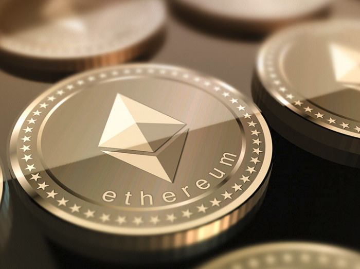
What is an exchange? A cryptocurrency exchange is an online service that allows you to buy cryptocurrency (such as Ethereum), using dollars.
When you wish to exit the cryptocurrency market, you will use an exchange to sell your accumulated Ether for dollars, selecting a desired bank account to withdraw to.
To use an exchange, they require you to have a registered account. All of your dollar deposits, dollar withdrawls, cryptocurrency buy/sell orders will be recorded to make your life easier when it comes to seeing how much money you've gained!
Step 1: Click one of the below exchanges links
We will use BTCMarkets in our examplesList of Australian Exchanges
Please note that all the exchanges around the world have a similar registration process - it has become industry standard.
Using BTCMarkets on the top right hand side, click "Create Account"
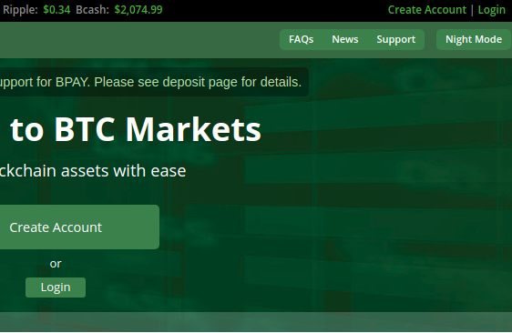
Register using your preferred email address
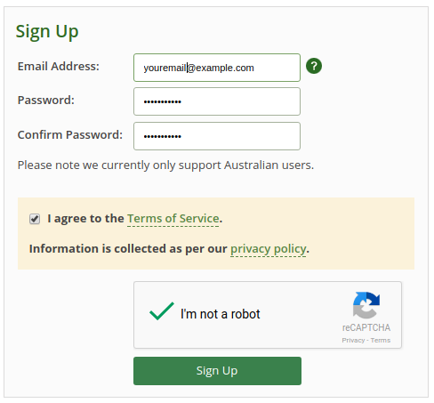
You'll notice that an alert informs you to verify your email before proceeding.
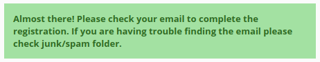
Navigate to your email inbox and click the verification link to continue onwards
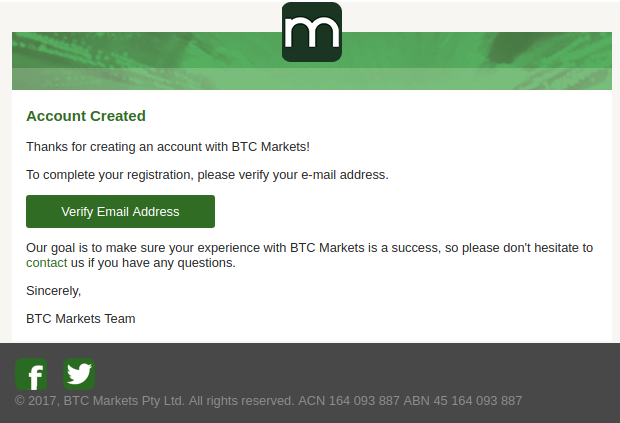
Press the login button after verifying your email
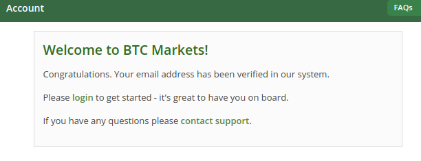
Login using your credentials. No need to enter a pin number as it will not have been set up yet. You can add a two factor authentication in your settings after logging in.
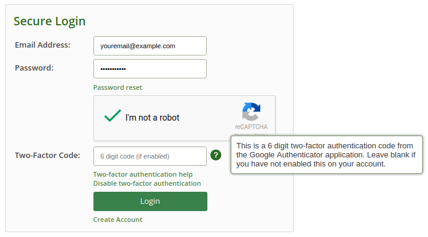
Notice your account is inactive until further information is provided. Click on the "Complete Profile" button
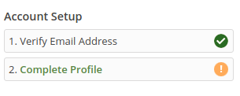
Provide your identity information to complete your profile and enable deposits and cryptocurrency purchases.
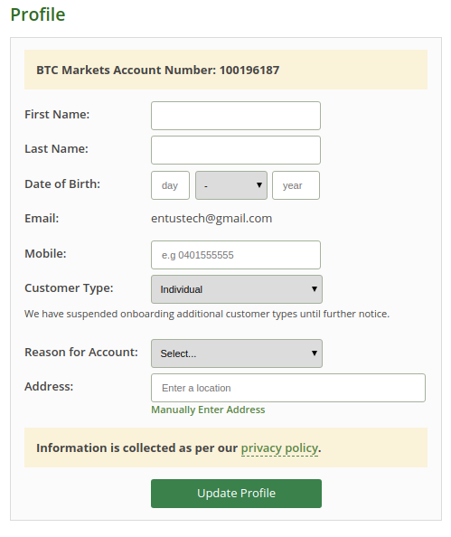
SUCCESS! Now you may deposit your funds
Go to your Account and select the Deposit page link
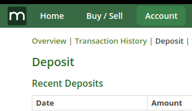
There are two australian dollar deposit options specifically on BTCMarkets. Other exchanges will present very similar options (eg. Coinspot).
Example screenshot with details is below
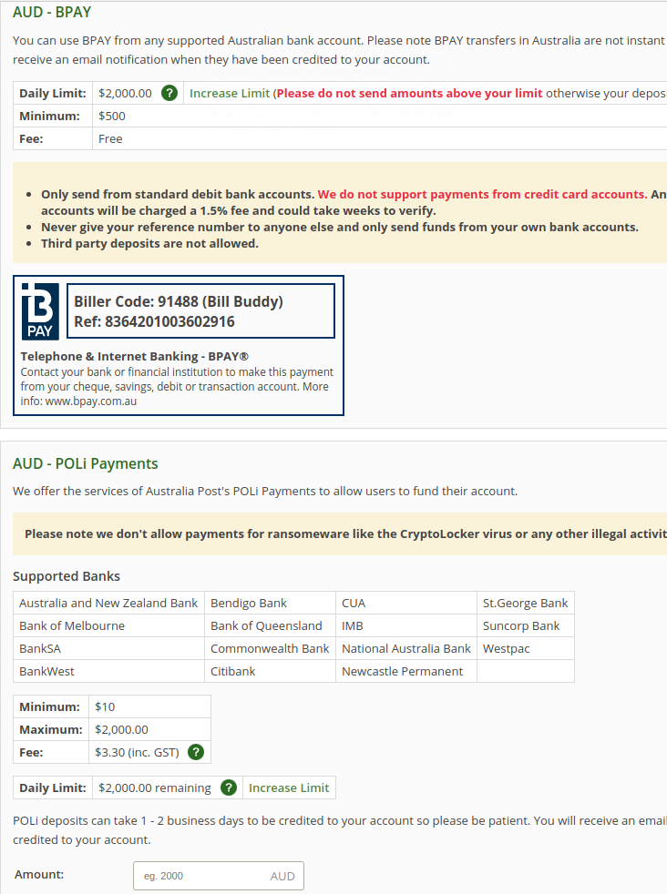
People tend to use the POLI payment option as it is a quicker way of getting funds into your account.
Every time I have used it, funds are available within 1 minute of transfer.
If you are not personally aware of what a POLI Payment is, it is a safe way of transferring money online for participating Australian banks. Read more about it here.
Follow through with one of the two options mentioned above before you can move onto buying your first ethereum in Step 5!Navigate to the purchase page on your chosen exchange to see the current cost of an Ether.
For BTCMarkets, click the "BUY/SELL" button to navigate to the correct page.
Since you are interested in buying an Ether, ensure you have selected the Ethereum Exchange by defining the dropdown box option to be "ETH/AUD".
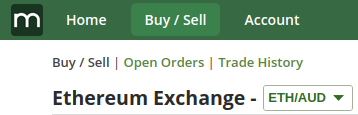
ETH/AUD phrase means "Ether to Australian Dollar" exchange.
To finally purchase an Ether, scroll down your page until you se a phrase similar to "Buy Ethereum" and a form field to enter your purchase limits.
You should be given an option to define how much of your available funds you wish to use (eg. click Spend All for an automatic calculation to inform you the total number of ETH you can currently buy), or manually enter the amount of ETH you want to buy. eg. 1.52701 ETH.
See example below:
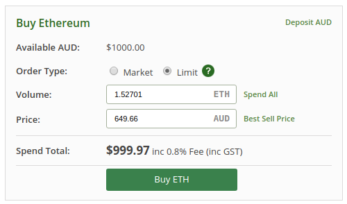
Visit your Account Overview to observe your asset holdings now denominated in "Ethereum" currency as opposed to Australian Dollars.
You have done it!
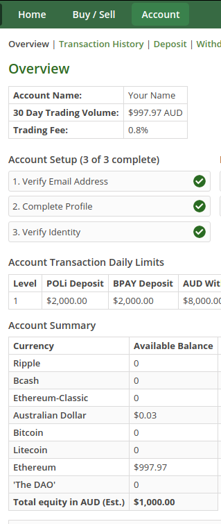
Now as Ethereum price surges or falls with respect to AUD or USD, you will see your estimated AUD holding fluctuate.
What's next?
To create your own wallet, you need to follow a set procedure that is set out here very well.
The main idea with regards to having your own "wallet" is that no one else in the world will know the password (private key) to it and hence will NOT be allowed to transfer Ether out of it.
Exchanges OWN the wallet that they give you and automatically enter your private key when you wish to perform transactions on an exchange. This means that if a hacker obtained access to their dataase, your funds may be compromised. This is rare, however it can happen.
To get your own Ethereum wallet and obtain a private key, follow this guide here
Withdraw your funds from an exchange by entering the target "public" address of your wallet (similar concept to pointing towards someones bank account number) by going to the withdraw ETH option.
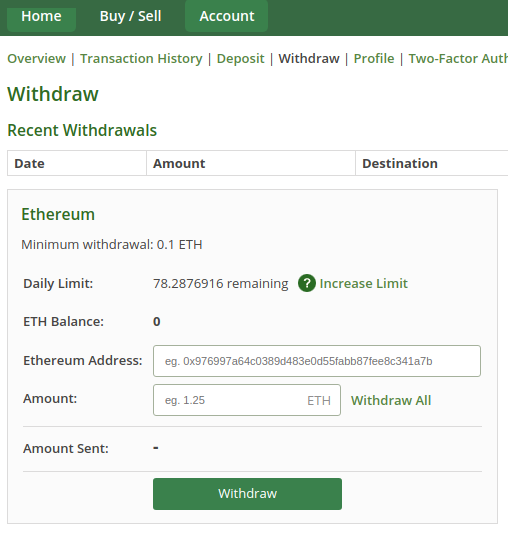
I hope this guide was helpful.